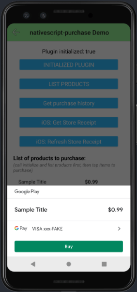
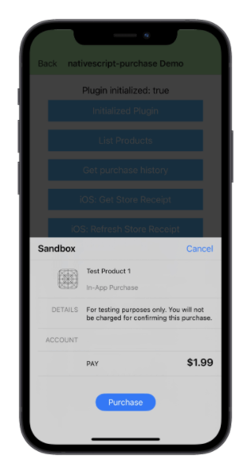

@rob4226/nativescript-purchase
NativeScript plugin for making in-app purchases 💵🛒 with native Android & iOS API's
NOTE: Only works with NativeScript v7+
ns plugin add @rob4226/nativescript-purchase
Screenshots
 
Usage
See complete API documentation in the type declaration file
See the demo apps for more help.
1) The callbacks passed to the plugin's constructor are where a lot of the action happens. They are called during various points of the in-app purchase lifecycle.
const nativescriptPurchase = new NativescriptPurchase({
// FYI onUpdate callback is invoked after order() is called.
onUpdate: (purchaseTransactionState) => {
if (purchaseTransactionState.resultCode === InAppPurchaseResultCode.Purchased) {
// Call orderConfirm(purchaseTransactionState) here to confirm purchase (see #5).
}
},
// FYI onUpdateHistory callback is invoked after purchaseHistory() is called.
onUpdateHistory: (purchaseTransactionState) => {
console.log(
"In-app purchase restored in onUpdateHistory() callback...",
`purchaseTransactionCode: ${purchaseTransactionState.resultCode}`
);
},
});
2) Then you need to initialize the plugin:
nativescriptPurchase
.init()
.then(() => console.log("Initialized nativescript-purchase plugin!"))
.catch((err) => console.error("Error initializing purchase plugin...", err));
3) Then you need to get InAppProduct objects for each product you want to sell
by providing the product ids you made in your Google/Apple developer accounts.
These InAppProduct objects will be used later when you to start a purchase
transaction.
const products: InAppProduct[] = [];
nativescriptPurchase
.list(['android.test.purchased', 'android.test.item_unavailable'])
.then((result: InAppListProductsResult) => {
for (const product of result.products) {
// Save the InAppProduct object to use when purchasing later.
products[product.productId] = product;
}
})
.catch((err) =>
console.error("Error getting list of in-app purchase products...", err)
);
4) To purchase one of your InAppProducts, use the order() method. You will get a
response in your onUpdate callback that you passed to the plugin's
constructor. If you get a InAppPurchaseResultCode.Purchased result code in the
response, you still have to confirm the purchase to finalize it.
nativescriptPurchase
.order(products["android.test.purchased"])
.then((orderResult: InAppOrderResult) => {
if (orderResult.success) {
console.log("Purchase has been processed ok, now expecting confirmation");
} else {
console.error("Purchase was unsuccessful in order function...", orderResult.message);
}
})
.catch((err) =>
console.error("There was an error purchasing the product...", err)
);
5) To confirm a purchase, take the InAppPurchaseTransactionState object you
receive from the onUpdate callback, and call orderConfirm() with it.
// 'purchaseTransactionState' is received from the 'onUpdate' callback that you
// passed to the plugin's constructor.
// Only purchased products can be confirmed
if (purchaseTransactionState.resultCode === InAppPurchaseResultCode.Purchased) {
nativescriptPurchase
.orderConfirm(purchaseTransactionState: InAppPurchaseTransactionState)
.then((result: InAppOrderConfirmResult) => {
if (result.success) {
// **Purchase is successful here, so grant the user what they bought 😀 **
console.log("Order confirmation has been processed, the purchase has been confirmed!");
} else {
console.error("The orderConfirm() result was not successful...");
}
})
.catch((e) => console.error(`OrderConfirm() failed (promise rejected)...${e}`));
}
To restore old purchases call purchaseHistory(). You will get a
response in your onUpdateHistory callback that you passed to the plugin's
constructor.
nativescriptPurchase
.purchaseHistory()
.then((inAppOrderHistoryResult: InAppOrderHistoryResult) => {
// Results for restored purchases are received by the 'onUpdateHistory' callback
// that you passed to the plugin's constructor.
console.log("The purchase history result is:", inAppOrderHistoryResult);
})
.catch((err) => console.error("Error getting purchase history...", err));
iOS Only - App Store Receipt
Returns the application's Base64 encoded store receipt for the currently logged in iOS App Store user.
const storeReceipt = this.nativescriptPurchase.getStoreReceipt();
console.log(storeReceipt);
On iOS, requests to refresh the store receipt, which represents the user's transactions with your app. It refreshes the store receipt for the currently logged in AppStore user. Use this API to request a new receipt if the receipt is invalid or missing. On iOS, it returns a completed promise once the refresh is complete.
nativescriptPurchase
.refreshStoreReceipt()
.then(() => console.log("Refreshed iOS store receipt."))
.catch((err) => console.error("Refreshing iOS store receipt failed...", err));
License
Apache License Version 2.0